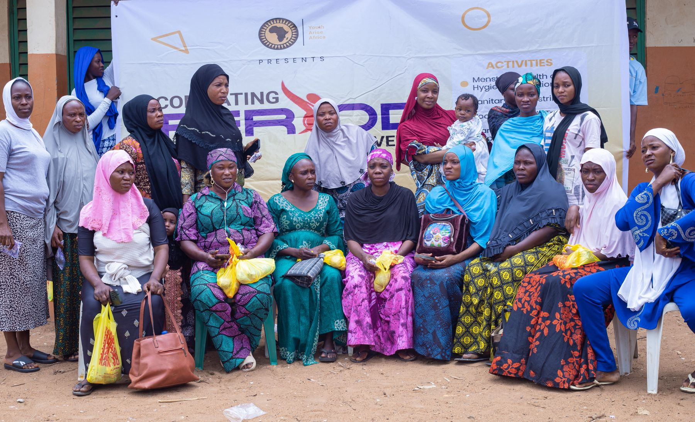

“I used to stay at home for three days every month. Now I have kits that last, and I know how to take care of myself. I have not missed a class this term.”
Programme participant
Secondary school student
Home / Impact
Our impact
We report what we reached, what changed, and what we would do differently. Accountability is one of our core values, so it has to survive contact with the results.
By the numbers
Figures cover programme activity to date and are updated at the close of each cycle.
Case study

In the communities we work in, the cost of sanitary products is routinely measured against the cost of food. When a family has to choose, girls stay home — often for several days of every school month. The loss compounds: missed lessons, falling grades, early exit from education.
Delivered with Youth Arise Africa, the campaign paired open menstrual health and hygiene education with the practical means to act on it — reusable sanitary kits, food and hygiene items, and sessions for parents and caregivers so the knowledge was not contradicted at home.
Girls, young women and caregivers across participating schools and community sites, with sessions held in the school compound so attendance carried no stigma.
Participants left with reusable kits lasting multiple cycles, accurate information about their own bodies, and a named person to follow up with.
School attendance across menstrual weeks, kit usage and condition at follow-up, and whether caregivers report changed attitudes at home.
Accountability
Reporting only the wins would make this page marketing, not accountability.
Follow-up is our weakest link. A one-day outreach is easier to fund and easier to photograph than the six-month accompaniment that actually changes outcomes — and our follow-up data is thinner than it should be.
We are also reaching fewer out-of-school young people than we intend. School-based delivery is efficient, but it systematically misses the people furthest from opportunity. Both are live priorities for our next programme cycle.
Every programme starts with a baseline — attendance records, a short pre-session questionnaire, or a community needs assessment. We repeat the measure at the end of the cycle and again at follow-up, and we publish both the change and the response rate, so you can judge how much weight the number carries.
Directly into programme delivery: kits and materials, facilitator costs, transport to communities, and the follow-up visits that make the first visit worth making. We publish a breakdown at the close of each cycle and are happy to walk any funder through it line by line.
Need first, access second. We prioritise communities where indicators are poorest and services thinnest, then confirm that local structures — a school, a women’s group, a local authority — are willing to co-own the work. Without that second condition, we do not start.
We hand over to the local structure we entered through, leave trained volunteers in place where we can, and schedule follow-up contact. Where a community wants to continue independently, we share our materials freely — no attribution required.
Voices
“I used to stay at home for three days every month. Now I have kits that last, and I know how to take care of myself. I have not missed a class this term.”
Programme participant
Secondary school student
“They did not come to lecture us. They asked what we needed first, and then they came back — which is more than most.”
Community leader
Host community
“I joined as a volunteer to help. I left running sessions on my own, with a team that listens to me. That changed what I think I am capable of.”
EAYDI volunteer
Leadership programme alumnus
The second visit is where outcomes are made. It is also the hardest thing to raise money for.